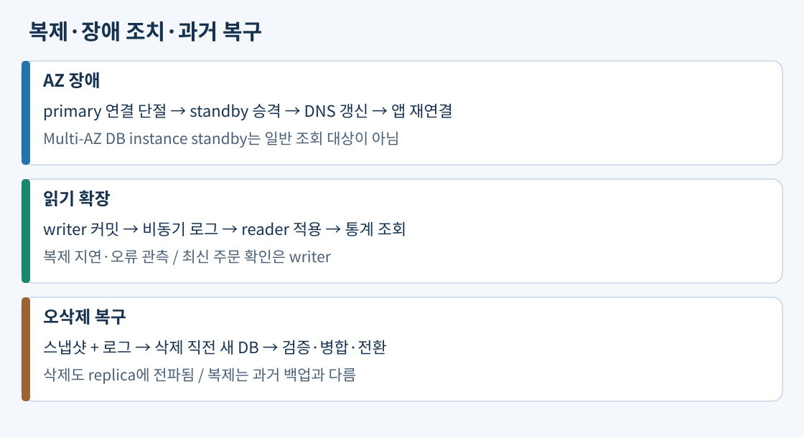
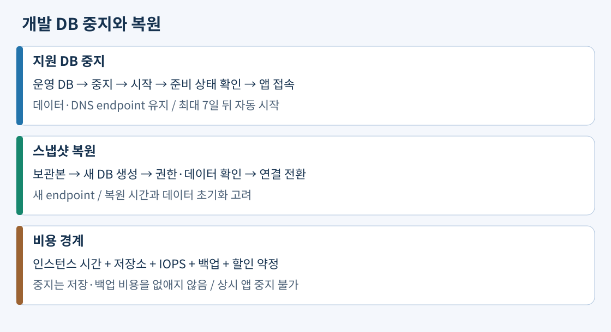

트랜잭션은 관련 변경을 전부 반영하거나 전부 취소하는 경계다. 주문 한 건을 생성하고 재고를 줄이는 SQL이 같은 트랜잭션 안에 있으면 재고 차감 실패 때 주문만 남기는 일을 막는다. COMMIT은 반영, ROLLBACK은 취소다. 관계형 제약은 존재하지 않는 고객의 주문이나 중복 주문 번호 같은 상태를 막는다. 다른 결제 회사의 API까지 DB 트랜잭션 하나로 자동 원자화되지는 않는다. 외부 결제에는 요청 ID, 중복 방지, 보상 처리가 따로 필요하다.
실제 구성 예: 기존 PostgreSQL 주문 앱은 지원되는 버전·확장을 확인해 RDS PostgreSQL로 옮기고 SQL과 드라이버 호환성을 시험한다. 라이선스 절감 때문에 Oracle을 PostgreSQL로 바꾼다면 저장 프로시저·자료형·SQL 방언도 변환 대상이다. “둘 다 SQL”이라는 조건만으로 엔진을 바꿀 수 없다. OS에 임의 에이전트를 설치해야 한다면 일반 RDS의 OS 접근 제약도 비교한다.
출처: RDS 엔진, PostgreSQL 기능
Multi-AZ DB instance는 primary에서 변경을 동기 복제한 standby를 다른 AZ에 둔다. standby는 정상 상태의 보고서 서버가 아니다. 장애 감지→standby 승격→DB DNS 변경→앱 재연결 순서로 복구하며 진행 중 트랜잭션은 실패할 수 있다. Multi-AZ DB cluster는 세 AZ에 writer와 읽기 가능한 reader 둘을 둔 별도 배포다. reader가 승격 후보이기도 하지만 두 배포 유형을 같은 용어로 뭉개면 안 된다.
읽기 복제본은 원본의 로그를 비동기로 적용한다. 쓰기 성공→로그 전달 대기→복제본 적용→조회 반영 순서이므로 주문 직후 확인은 writer, 지연 허용 통계는 replica로 나눌 수 있다. ReplicaLag와 복제 상태를 함께 관측한다. 긴 쿼리·자원 부족·복제 오류로 적용이 밀리면 복제본이 실행 중이어도 최신 데이터라는 뜻은 아니다. error 상태는 이벤트와 복제 오류를 조사하고 복구·재생성 여부를 결정한다. 승격은 복제 관계를 끊어 독립적인 쓰기 DB로 만드는 작업이며 일반 replica의 자동 HA를 뜻하지 않는다. 삭제 SQL도 전파하므로 백업을 유지한다.
실제 구성 예: 주문용 Multi-AZ DB instance를 유지하고 별도 replica에 월별 집계를 연결한다. replica 지연이 허용 한도를 넘으면 통계의 신선도 표시나 제한을 적용한다. 최신 주문 확인을 무조건 writer로 되돌리면 그 부하도 감당할 수 있어야 한다.

출처: Multi-AZ instance, Multi-AZ cluster, 복제 상태와 지연, 승격
Aurora의 writer와 reader는 여러 AZ에 걸친 클러스터 볼륨을 공유한다. reader 인스턴스의 메모리·적용 지연은 여전히 있으므로 공유 저장소를 “모든 읽기 항상 최신”으로 해석하지 않는다. 읽기 확장은 reader 컴퓨팅을 추가하는 것이며 저장 계층 보호만으로 승격할 reader가 생기지는 않는다.
writer endpoint는 현재 writer에 연결한다. reader endpoint는 새 연결을 reader에 분산한다. 연결 하나로 SQL 만 개를 실행하면 한 reader가 계속 처리한다. 실제 구성 예: 랭킹 조회용 풀에 여러 연결을 만들고 적절한 연결 수명과 재연결을 적용해 reader별 CPU·지연을 확인한다. 연결 수를 과도하게 늘리면 오히려 DB 메모리를 소모한다. DNS TTL만 줄여도 이미 열린 연결의 SQL이 재분배되지 않는다. instance endpoint는 특정 서버에 고정하므로 장애 뒤 역할을 앱이 알아야 한다.
RDS Proxy는 연결 풀로 짧은 Lambda 호출들의 DB 연결을 재사용한다. SQL 결과를 캐시하거나 한 연결 안의 SQL을 분석해 writer/reader로 자동 분류하지 않는다. 읽기 전용 proxy endpoint는 지원 구성에서 별도 지정한다. 긴 트랜잭션과 세션 상태로 연결이 pinning되면 풀 효율이 줄어든다. 함수 동시 실행 상한은 연결 풀과 별개로 10일 차에서 다룬다.
출처: Aurora 구조, reader endpoint, RDS Proxy
Global Database는 기본 리전의 저장 변경을 보조 리전에 비동기로 복제한다. 보조 리전 읽기와 리전 DR에 쓰지만 미전달 변경이 있으면 비계획 장애 조치에서 손실이 가능하다. 계획된 switchover는 양쪽이 정상일 때 동기화 후 역할을 바꾸는 절차다. DB 복구 후 앱, 비밀값, 네트워크와 DNS도 전환해야 서비스 RTO가 끝난다. 다중 AZ는 같은 리전 안의 장애 범위를 다룬다.
Serverless v2의 ACU는 약 2GiB 메모리와 그에 상응하는 CPU·네트워크를 포함하는 컴퓨팅 용량 단위다. 최소·최대 ACU를 정하고 부하에 따라 그 안에서 바뀐다. 저장소 크기나 IOPS를 ACU로 지정하는 것이 아니다. 지원 엔진 버전에서 최소 0 ACU와 유휴 시간을 설정하면 자동 pause를 허용한다. 연결이 남거나 Global Database·특정 복제 기능 등이 pause를 막을 수 있다. 새 연결의 재개 지연과 저장·백업 비용도 남는다. 항상 켜진 운영 연결 풀을 유지하면서 자동으로 0이 되리라 예산 잡지 않는다.
PITR은 자동 백업 보존 범위 안에서 스냅샷과 로그로 새 DB를 만든다. LatestRestorableTime과 가장 이른 복구 시각을 확인한다. 보존 기간을 지금 늘린다고 이미 사라진 과거 로그가 돌아오지 않는다. 범위 밖 사고에 그 시점의 수동 스냅샷이 남았다면 스냅샷 시점으로 복원할 수 있지만 스냅샷 이후 임의 초로 이동하는 것은 아니다.
실제 구성 예: 10시 오삭제, 10시 30분 발견이라면 9시 59분 복원본을 만들고 현재 DB의 10시 이후 정상 주문과 비교한다. 전체 연결을 과거 DB로 바로 바꾸면 정상 주문도 잃을 수 있다. 필요한 레코드 병합 또는 쓰기 정지·전환 계획을 세우고 권한, 파라미터, 암호화 키, 앱 접속을 검증한다. 새 DB에는 새 endpoint가 생기므로 연결 설정도 바꿔야 한다. available 이후에도 데이터 블록 초기화가 지연에 영향을 줄 수 있다.
복구 지점의 삭제 권한도 보호한다. 운영 SQL 변경 권한과 백업 삭제 권한을 분리하고 보존 정책·감사로 정상 사본이 사고 직후 함께 지워지지 않게 한다. 백업이 존재해도 같은 운영 경로에서 모두 삭제할 수 있으면 독립된 복구 수단이 약해진다.
자동 백업의 연속 시점 복구와 월별 수동 스냅샷의 장기 보존은 서로 다른 요구다. 불필요한 테스트 DB의 수동 스냅샷은 DB 삭제 뒤에도 남아 비용이 발생할 수 있다. 법적 보존 표시와 소유자를 확인해 불필요한 사본만 정리한다.
지원되는 RDS DB instance를 중지하면 데이터와 DNS endpoint는 유지하고 DB instance 시간 요금을 멈춘다. 저장소·Provisioned IOPS·백업 요금은 남으며 최대 7일 뒤 자동 시작된다. 읽기 복제본이나 원본 등 구성 제약도 확인한다. EC2의 일반 stop에 이 RDS 7일 자동 시작 규칙을 적용하지 않는다. 삭제 후 스냅샷 복원은 새 DB를 준비하는 별도 경로여서 endpoint와 준비 시간이 다르다.
실제 구성 예: 개발 DB가 10시부터 필요하고 측정한 시작 시간이 20분이라면 여유를 두고 사전 시작하며 준비 상태와 접속을 확인한다. 주말만 중지하면 7일보다 짧지만 장기 휴가는 자동 시작을 고려한다. 24시간 운영 DB를 밤마다 중지하는 것은 데이터 보존 여부와 별개로 가용성 요구를 위반한다.

CPU, FreeableMemory·swap, 연결 수, IOPS·처리량·지연, FreeStorageSpace를 같이 측정한다. I/O 포화인데 CPU만 늘리면 병목이 남고, CPU가 낮아도 작업 집합보다 메모리가 작으면 swap으로 느려질 수 있다. 대표 피크 부하에서 후보 사양의 응답 목표를 시험하고 변경 재시작을 점검 시간에 반영한다. Proxy는 메모리 작업 집합 부족의 대안이 아니다.
스토리지 자동 확장은 공간 부족에 따라 상한까지 증가하는 기능이다. CPU 확장이나 자동 축소가 아니다. 데이터를 지워도 할당 저장량 요금은 그대로일 수 있다. Provisioned IOPS는 지속 I/O 성능에 맞춰 비용을 내므로 필요한 IOPS와 처리량을 측정한다. RDS Reserved Instances는 엔진·리전·인스턴스 구성 등 적용 조건에 맞는 지속 사용의 요금 할인이다. EC2 Instance Savings Plans를 RDS 할인으로 적용하지 않는다. 할인 약정은 적정 사양과 실제 상시 사용량을 정한 다음 비교한다. 백업 보존, HA, 라이선스 요구를 제거해 만든 절감액은 같은 요구를 만족하는 비교가 아니다.
출처: RDS 중지와 비용, EC2 중지, 사양 변경, 스토리지, 자동 확장
공식 자료 확인일: 2026-11-02